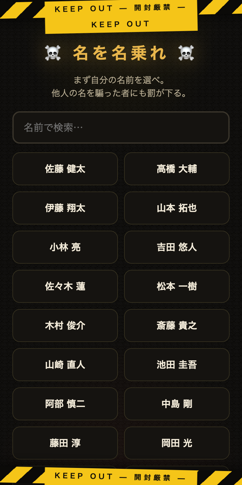
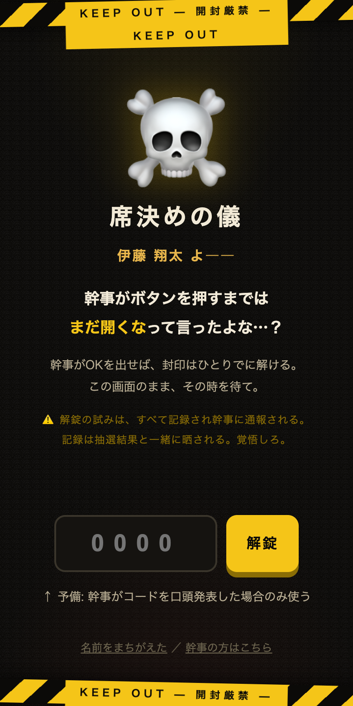
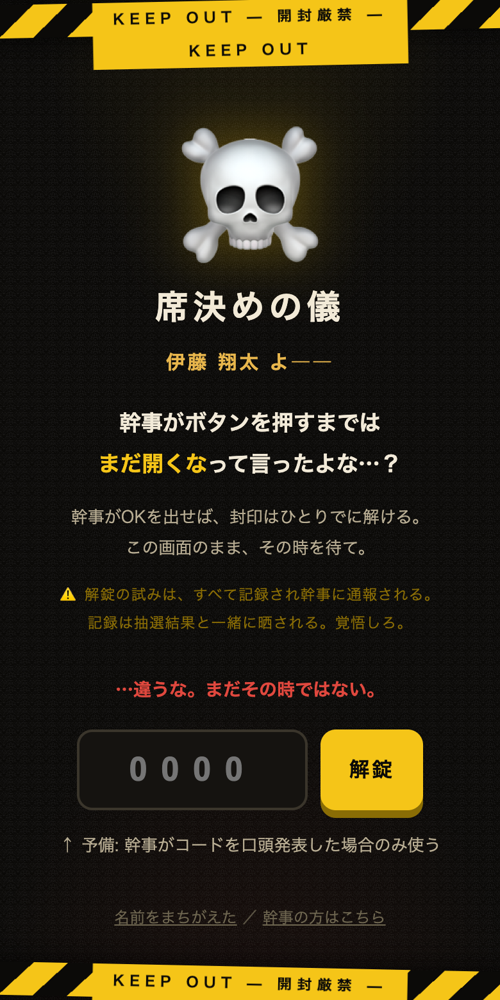
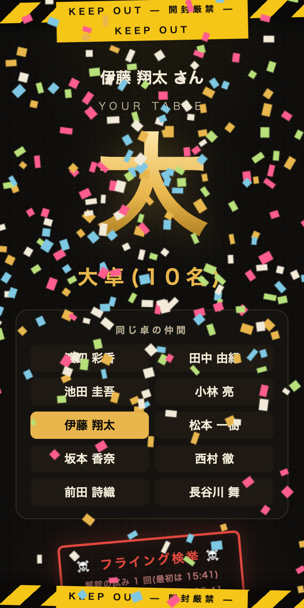
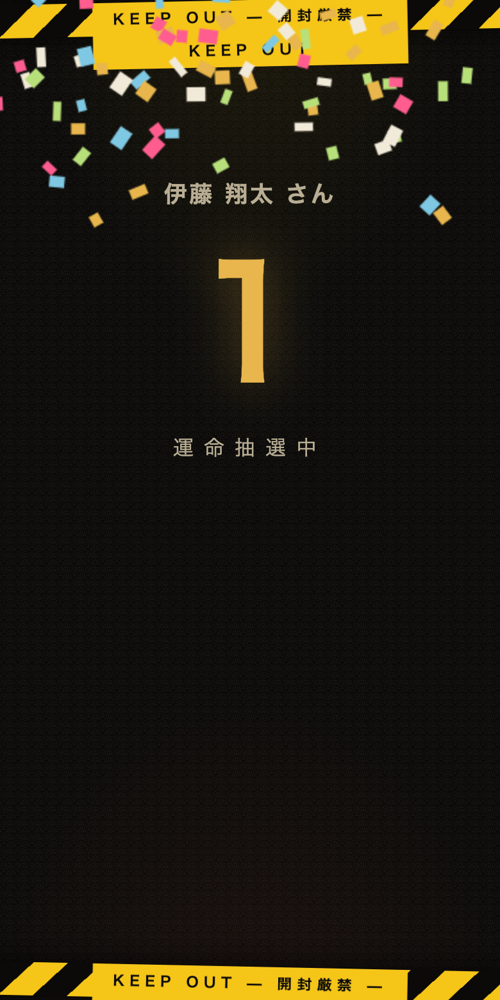
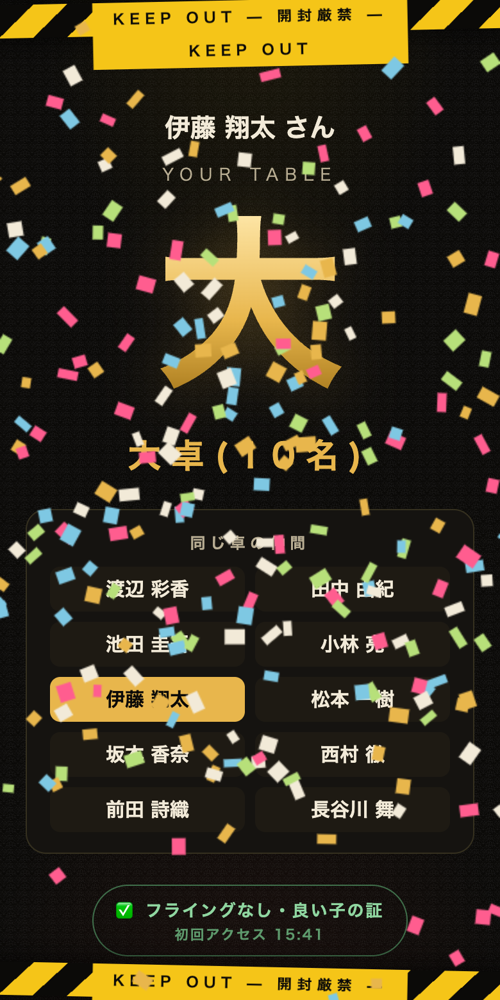
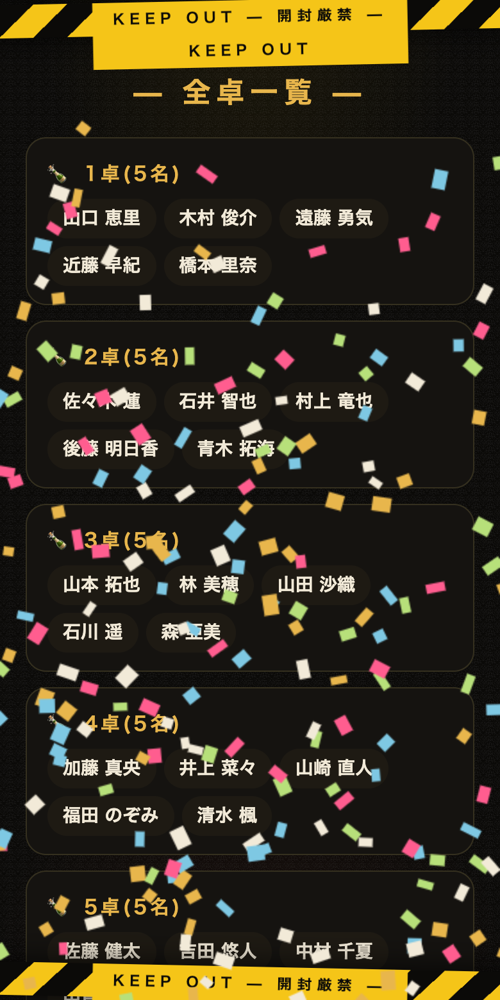
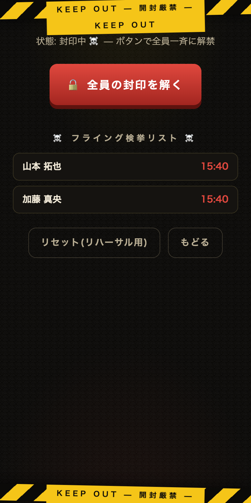

結婚式二次会・席決め抽選アプリ — ゲストも幹事もこれ1枚でOK
全員のスマホで同時に席の抽選結果がわかるアプリです。幹事がOKを出すまでは、ドクロの封印がかかっていて誰も結果を見られません。
やることは「開いて、名乗って、待つ」だけです。
最初に 自分の名前 を一覧から選びます。検索欄に名前の一部を入れるとすぐ見つかります。
⚠️ 他人の名前を選ぶのはやめましょう。フライング通報がその人の名前で記録されてしまいます(=罰が下ります)。

この画面が出たら準備完了。何もしなくてOKです。幹事がボタンを押すと、封印はひとりでに解けます。

コードを当てずっぽうで入れると、ドクロが怒ります。そしてその試みは名前つきで幹事に通報され、結果画面に「検挙スタンプ」が押されます。罰ゲームが待っています。


幹事がOKを出すと自動でスロット演出がはじまり、あなたの卓番号と「同じ卓の仲間」が表示されます。



▲「全卓一覧」— 誰のスマホからでも全員分が見られる(電池切れ救済用)
事前準備
index.html の CONFIG を設定する: ゲスト名簿(名前+性別+新郎側/新婦側)、各卓の枠(新郎側・新婦側を何人ずつ入れるか)、幹事の固定席(FIXED)、必ず同卓にしたいペア(PAIRS)。CODE)を決めておく。当日発表するまで秘密。当日
封印画面の下の「幹事の方はこちら」→ 幹事用PINを入力。
「🔓 全員の封印を解く」を押すと、数秒以内に会場全員のスマホが一斉にスロット演出をはじめます。マイクで「今だ!スマホを見ろ!」と煽ると盛り上がります。

コンソールには、封印を先に開けようとした人が名前と時刻つきで並んでいます。「山本くん、18時2分。乾杯前だよねぇ?」— 罰ゲームへどうぞ。
結果画面のスタンプでも見分けられます:赤い「フライング検挙」=クロ、緑の「良い子の証」=シロ。